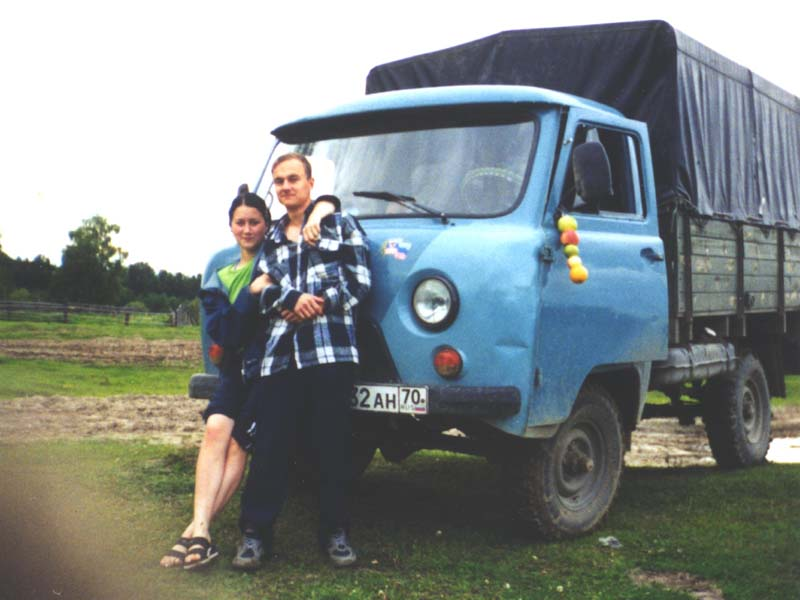

<<< Назад

Это Танькин день варенья. На переднем плане я и всё та же Танька, а сзади наша бибилька. Ух и холодно тогда было, однако так хотелось купаться, что я отважился сунуться в воду. Удивительно, как после этого я не заболел.